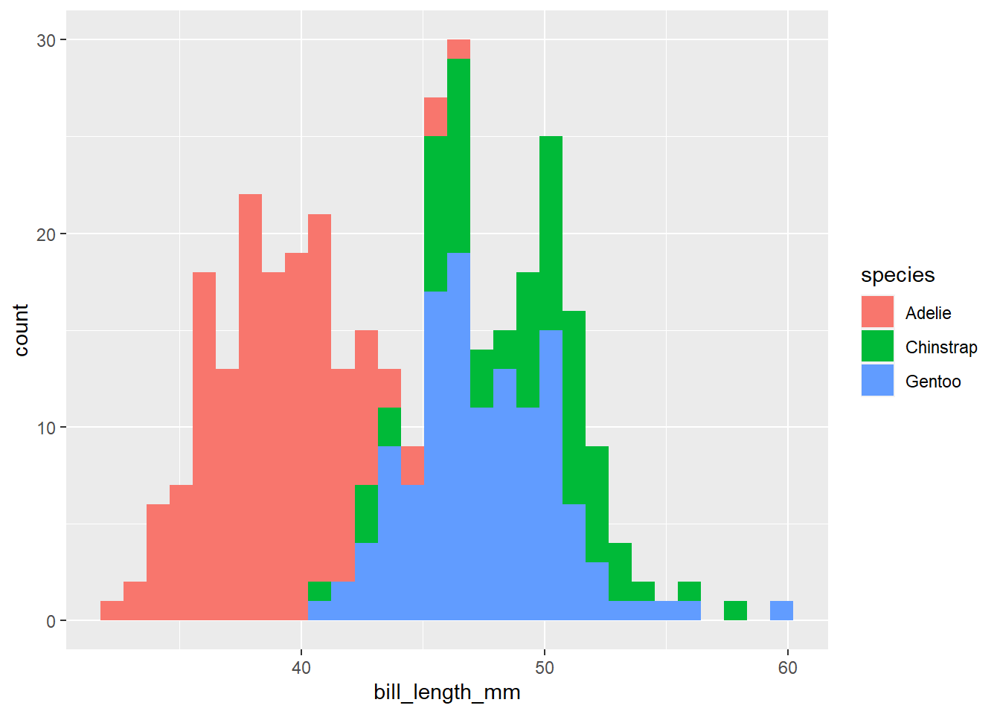
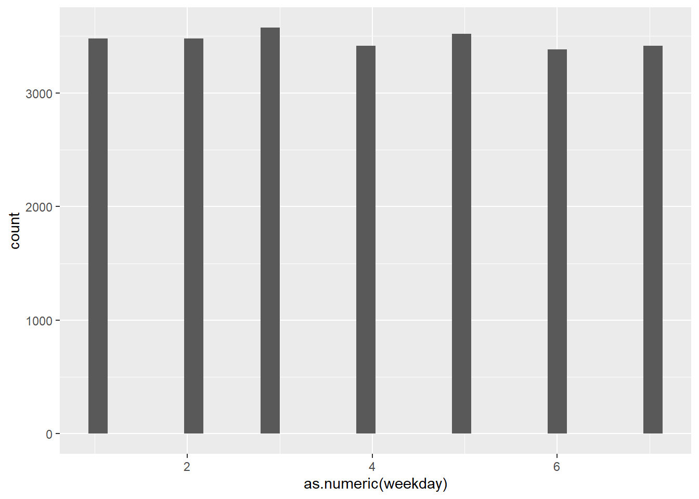
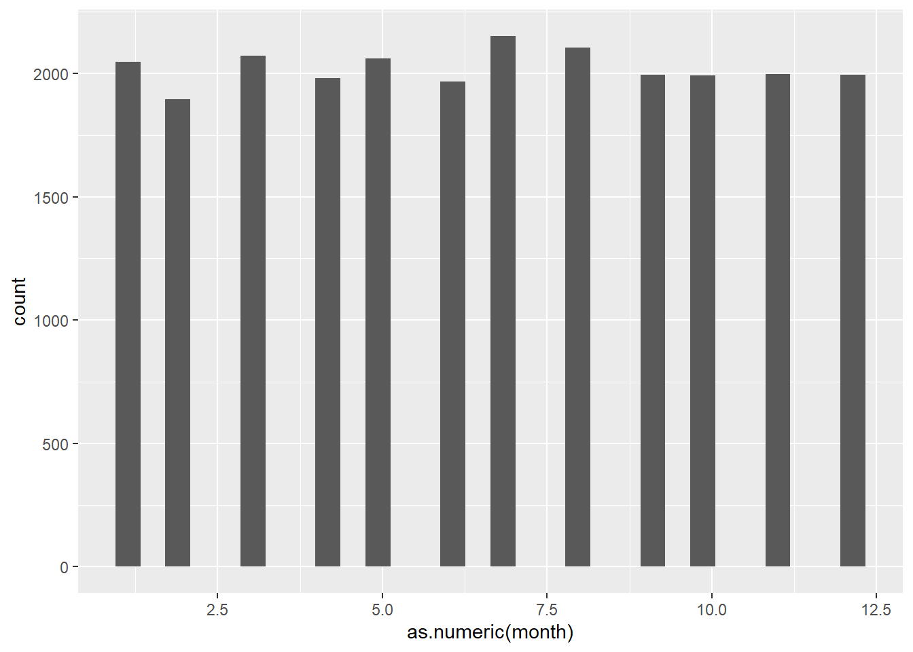
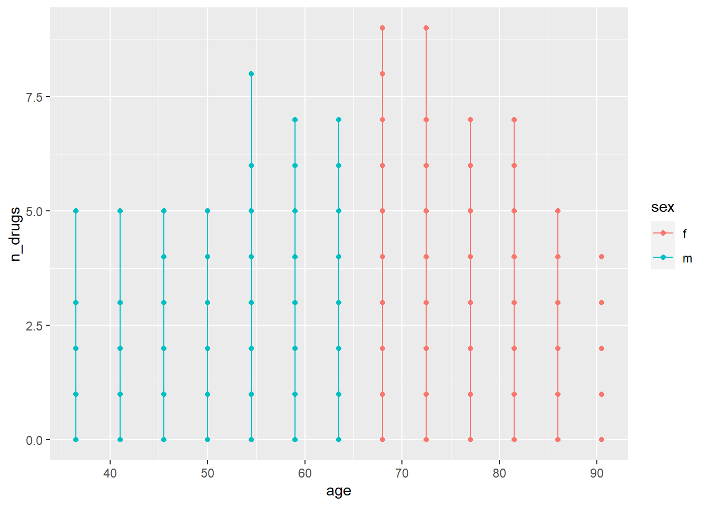
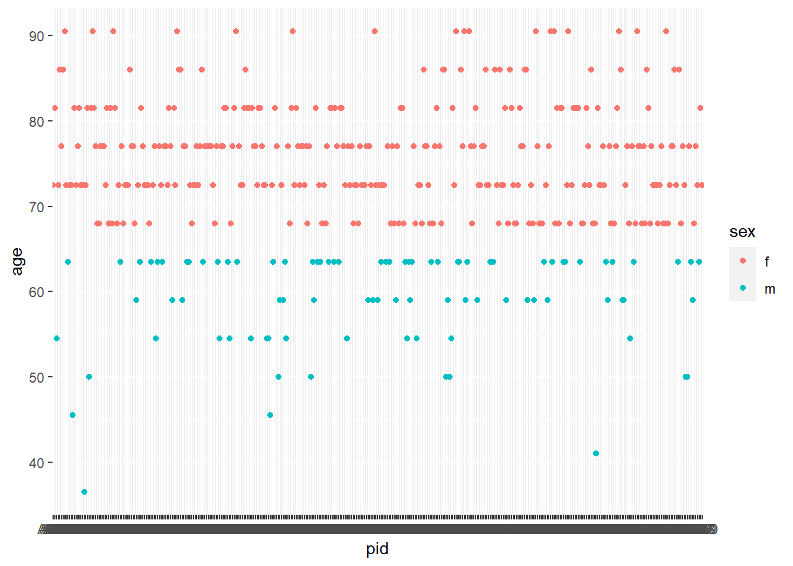
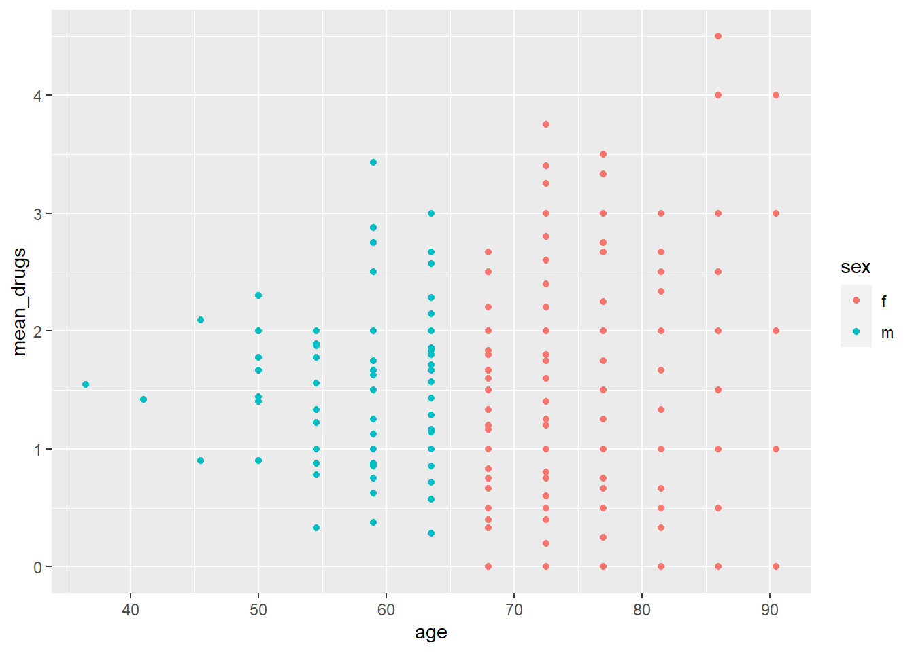

library(here)
library(stringr)
library(dplyr)
library(tidyr)
library(palmerpenguins)R programming course lecture 3
Load packages
Strings & dates
this is an introduction of how to print strings and dates
###Combining strings Below is the example from the lecture on how to combine strings, it uses the % sign to combine the next terms.
These examples are included for reference in case I need them later I can refer to this code.
text.mean.sd<-"mean and sd of %s: %.2f (%.2f)"
text.mean.sd%>%sprintf( "bill depth (mm)",
mean(penguins$bill_depth_mm, na.rm = TRUE),
sd(penguins$bill_depth_mm, na.rm = TRUE))[1] "mean and sd of bill depth (mm): 17.15 (1.97)"rm(text.mean.sd)
sprintf("n and percent male: %.0f (%.1f%%)",
sum(penguins$sex == "male", na.rm = TRUE),
100 * sum(penguins$sex == "male", na.rm = TRUE) / nrow(penguins) )[1] "n and percent male: 168 (48.8%)"There’s a glue package that can also do this
#install.packages("glue")
library(glue)
glue("n and percent male: {round(nmale)} ({round(percentmale, 1)}%)",
nmale = sum(penguins$sex == "male", na.rm = TRUE),
percentmale = 100 * sum(penguins$sex == "male", na.rm = TRUE) / nrow(penguins))n and percent male: 168 (48.8%)penguins |> group_by(species) |>
summarize(mean_bill = mean(bill_length_mm, na.rm = TRUE),
sd_bill = sd(bill_length_mm, na.rm =T)) |>
glue_data("The mean (sd) bill length for {species} is {round(mean_bill, 1)} ({round(sd_bill,1)})mm")The mean (sd) bill length for Adelie is 38.8 (2.7)mm
The mean (sd) bill length for Chinstrap is 48.8 (3.3)mm
The mean (sd) bill length for Gentoo is 47.5 (3.1)mm#Equivalent variance?? (No I made a mistake in the code, but I checked like this below)
library(ggplot2)
penguins |> ggplot(aes(x=bill_length_mm))+geom_histogram(aes(fill=species))
penguins |> group_by(species) |> summarize(sd = sd (bill_length_mm, na.rm=T))# A tibble: 3 × 2
species sd
<fct> <dbl>
1 Adelie 2.66
2 Chinstrap 3.34
3 Gentoo 3.08###Regular Expressions
Get help Regexps can be very complex, but for simple patterns they can save you time
Write and double-check your pattern:
The cheatsheet on strings and regular expressions R 4 Data Science, chapter on regular expressions https://regex101.com/
#Exercise 3A
med2005 <- readRDS(here("data", "med-2005-ex.rds"))
here()[1] "H:/Dokumenter/PhD/Statistik/rprogramming"library(lubridate)
lpr<-readRDS(here("data","lpr-ex.rds"))
#readRDS("C:/Users/mada0011/Desktop/R fra KU GUEST/rprogramming/data/lpr-ex.rds") #
str(lpr)'data.frame': 2008 obs. of 12 variables:
$ pid : chr "A001" "A001" "A001" "A001" ...
$ age : num 72.5 72.5 72.5 72.5 72.5 81.5 81.5 81.5 54.5 54.5 ...
$ sex : chr "f" "f" "f" "f" ...
$ indat: Date, format: "2010-01-27" "2010-06-26" ...
$ visit: int 1 2 3 4 5 1 2 3 1 2 ...
$ hdia : chr "H560" "C871" "C040" "F412" ...
$ diag1: chr "B632" "D422" "B710" "F381" ...
$ diag2: chr "H180" "K820" NA "F632" ...
$ diag3: chr "J050" "A602" NA "E832" ...
$ diag4: chr NA NA NA NA ...
$ diag5: chr NA NA NA NA ...
$ diag6: chr NA NA NA NA ...Select from lpr and pivot wider
lpr |> select(pid, age, sex, visit, hdia)|>
pivot_wider(
names_from = visit,
values_from = hdia,
names_prefix = "visit_"
)# A tibble: 400 × 16
pid age sex visit_1 visit_2 visit_3 visit_4 visit_5 visit_6 visit_7
<chr> <dbl> <chr> <chr> <chr> <chr> <chr> <chr> <chr> <chr>
1 A001 72.5 f H560 C871 C040 F412 F622 <NA> <NA>
2 A002 81.5 f B481 K959 G902 <NA> <NA> <NA> <NA>
3 A003 54.5 m E841 E071 H189 B090 C031 E179 E950
4 A004 72.5 f D921 B401 B491 G172 E161 <NA> <NA>
5 A005 86 f J751 B101 <NA> <NA> <NA> <NA> <NA>
6 A006 77 f E310 C231 C212 B251 <NA> <NA> <NA>
7 A007 86 f I462 F190 <NA> <NA> <NA> <NA> <NA>
8 A008 90.5 f C451 <NA> <NA> <NA> <NA> <NA> <NA>
9 A009 72.5 f D162 H580 C729 B992 B500 <NA> <NA>
10 A010 63.5 m A709 A772 B800 F212 K402 F712 K180
# ℹ 390 more rows
# ℹ 6 more variables: visit_8 <chr>, visit_9 <chr>, visit_10 <chr>,
# visit_11 <chr>, visit_12 <chr>, visit_13 <chr>#part 2
lprlong <-lpr |>pivot_longer(cols = hdia:diag6,
names_to = "diag_type",
values_to = "all_diag",
values_drop_na = T)|>
mutate(main_diag = diag_type == "hdia")
lprlong<-lprlong|>
group_by(pid)|>
mutate(d15_diag =
all_diag %in% c("D150","D152","D159") &
indat <= as.Date("2010-01-01")
) #this doesn't work. I misses multiple individuals. Maybe removing the group_by can solve it?
lprlong<-lprlong|>
mutate(d15_diag = case_when(
all_diag == "D150" &
indat < ymd("2010-01-01") ~ T,
all_diag == "D152" &
indat < ymd("2010-01-01") ~ T,
all_diag == "D159" &
indat < ymd("2010-01-01") ~ T,
T~F)) #this doesn't work either ...
#ok let's break it into smaller steps.
lpr.only.d15<-lprlong|>filter(
all_diag %in% c("D150","D152","D159")
)
lpr.only.d15|>mutate(
d15_diag = case_when(
indat < ymd("2010-01-01") ~T,
T ~ F
)
)# A tibble: 5 × 9
# Groups: pid [5]
pid age sex indat visit diag_type all_diag main_diag d15_diag
<chr> <dbl> <chr> <date> <int> <chr> <chr> <lgl> <lgl>
1 A048 86 f 2006-08-20 1 diag2 D152 FALSE TRUE
2 A144 63.5 m 2010-03-05 6 diag2 D150 FALSE FALSE
3 A159 77 f 2011-08-17 3 diag1 D150 FALSE FALSE
4 A245 50 m 2010-05-23 3 hdia D152 TRUE FALSE
5 A308 63.5 m 2010-05-31 6 diag4 D150 FALSE FALSE #Ok, I just realized that the original approach did work, none of the others were before 2010-01-01
#no need to merge back in then.Iterate loading in RDS data
med<-list(2005:2010)
for (i in 2005:2010){
drugi<-
readRDS(here(paste0( "data/","med-",i,"-ex.rds")))
med[[i - 2005 +1]]<-drugi
}
drugs<-do.call(rbind,med)##Merging and manipulation The objective of this project is to describe the distribution of the number of days between hospitalizations and drug dispensations by age and sex. Your challenge is to do the following: ###Dates
#install.packages(lubridate)
library(lubridate)Dates and character strings – exercises
Use the lubridate package (try the function wday) to calculate the day of the week when the dispensation occurred. Do dispensations occur less frequently on weekends?
Calculate the month of the dispensation. Is there a seasonal trend on the number of dispensations?
drugs<-drugs %>% mutate(weekday=factor(lubridate::wday(date)))
drugs%>%ggplot(aes(x=as.numeric(weekday)))+geom_histogram()
lm.dose.wkday<-lm(dose~weekday,data=drugs)
summary(lm.dose.wkday)
Call:
lm(formula = dose ~ weekday, data = drugs)
Residuals:
Min 1Q Median 3Q Max
-406.4 -283.8 -124.8 152.2 4108.0
Coefficients:
Estimate Std. Error t value Pr(>|t|)
(Intercept) 394.79155 6.82075 57.881 <2e-16 ***
weekday2 11.62778 9.64669 1.205 0.228
weekday3 -0.00951 9.58100 -0.001 0.999
weekday4 7.20552 9.69110 0.744 0.457
weekday5 9.01749 9.61786 0.938 0.348
weekday6 7.73477 9.71420 0.796 0.426
weekday7 2.39802 9.69181 0.247 0.805
---
Signif. codes: 0 '***' 0.001 '**' 0.01 '*' 0.05 '.' 0.1 ' ' 1
Residual standard error: 402.3 on 24250 degrees of freedom
Multiple R-squared: 0.000114, Adjusted R-squared: -0.0001334
F-statistic: 0.4607 on 6 and 24250 DF, p-value: 0.8378#Can also be written with the native pipe
drugs|>
lm(dose~weekday,data=_)|>
assign(x="lm.dose.wkday")|>
summary()
Call:
lm(formula = dose ~ weekday, data = drugs)
Residuals:
Min 1Q Median 3Q Max
-406.4 -283.8 -124.8 152.2 4108.0
Coefficients:
Estimate Std. Error t value Pr(>|t|)
(Intercept) 394.79155 6.82075 57.881 <2e-16 ***
weekday2 11.62778 9.64669 1.205 0.228
weekday3 -0.00951 9.58100 -0.001 0.999
weekday4 7.20552 9.69110 0.744 0.457
weekday5 9.01749 9.61786 0.938 0.348
weekday6 7.73477 9.71420 0.796 0.426
weekday7 2.39802 9.69181 0.247 0.805
---
Signif. codes: 0 '***' 0.001 '**' 0.01 '*' 0.05 '.' 0.1 ' ' 1
Residual standard error: 402.3 on 24250 degrees of freedom
Multiple R-squared: 0.000114, Adjusted R-squared: -0.0001334
F-statistic: 0.4607 on 6 and 24250 DF, p-value: 0.8378drugs<-drugs %>% mutate(month=factor(lubridate::month(date)))
drugs%>%ggplot(aes(x=as.numeric(month)))+geom_histogram()
drugs|>
lm(dose~month,data=_)|>
assign(x="lm.dose.month")|>
summary()
Call:
lm(formula = dose ~ month, data = drugs)
Residuals:
Min 1Q Median 3Q Max
-413.9 -284.3 -125.0 152.5 4107.1
Coefficients:
Estimate Std. Error t value Pr(>|t|)
(Intercept) 395.536 8.892 44.482 <2e-16 ***
month2 19.345 12.823 1.509 0.131
month3 7.545 12.536 0.602 0.547
month4 8.236 12.676 0.650 0.516
month5 8.840 12.554 0.704 0.481
month6 -4.010 12.701 -0.316 0.752
month7 -16.201 12.421 -1.304 0.192
month8 11.091 12.485 0.888 0.374
month9 7.344 12.657 0.580 0.562
month10 -1.279 12.660 -0.101 0.920
month11 15.305 12.652 1.210 0.226
month12 1.454 12.655 0.115 0.909
---
Signif. codes: 0 '***' 0.001 '**' 0.01 '*' 0.05 '.' 0.1 ' ' 1
Residual standard error: 402.2 on 24245 degrees of freedom
Multiple R-squared: 0.0005183, Adjusted R-squared: 6.487e-05
F-statistic: 1.143 on 11 and 24245 DF, p-value: 0.3222So in the 2005 set there does seem to be significantly fewer dispensations than the overall mean in June and July, however in the overall drugs data set there was no significant difference. There is no significant differences across the week.
- Use dplyr or data.table to create a new variable that is the last dispensation for each individual during the year (using group_by then mutate or := with by). Then calculate the number of days between each dispensation and the last one. What is the average number of days?
drugs<-drugs |>
mutate(year=factor(lubridate::year(date)))|>
group_by(pid,year)|>mutate(
last_dispensation = max(date)
)|>mutate(
time_to_last_disp = last_dispensation - date
)
mean(drugs$time_to_last_disp)Time difference of 149.5238 daysWhat is the average number of days? {r} mean(drugs$time_to_last_disp)
Exercise 3b
Tidying our mean sd function
Load the broom package and look at the source code for tidy.lm
library(broom)
broom:::tidy.lmfunction (x, conf.int = FALSE, conf.level = 0.95, exponentiate = FALSE,
...)
{
warn_on_subclass(x, "tidy")
ret <- as_tibble(summary(x)$coefficients, rownames = "term")
colnames(ret) <- c("term", "estimate", "std.error", "statistic",
"p.value")
coefs <- stats::coef(x)
if (length(coefs) != nrow(ret)) {
coefs <- tibble::enframe(coefs, name = "term", value = "estimate")
ret <- left_join(coefs, ret, by = c("term", "estimate"))
}
if (conf.int) {
ci <- broom_confint_terms(x, level = conf.level)
ret <- dplyr::left_join(ret, ci, by = "term")
}
if (exponentiate) {
ret <- exponentiate(ret)
}
ret
}
<bytecode: 0x000001a69184fcf8>
<environment: namespace:broom>Tidy mean SD function
test_vector<-1:10
mean_sd <- function(x, na.rm = TRUE) {
return <- data.frame(mean = mean(x, na.rm = na.rm),
sd = sd(x, na.rm = na.rm))
structure(return,
class = "meansd",
variable = deparse1(substitute(x))
)
}
print.meansd <- function(x, ...) {
sprintf("%s has mean (sd): %.2f (%.2f)",
attr(x, "variable"),
x$mean, x$sd) |>
cat()
}
mean_sd(test_vector)test_vector has mean (sd): 5.50 (3.03)tidy method
mean_sd(penguins$bill_depth_mm)penguins$bill_depth_mm has mean (sd): 17.15 (1.97)# Write a tidy method for our mean_sd function and try it out on the penguins dataset.
tidy.meansd <- function(x, ...) {
data.frame(variable = attr(x, "variable"),
mean = x$mean,
sd = x$sd
)
}
tmp <- mean_sd(penguins$bill_depth_mm)
tidy(tmp) variable mean sd
1 penguins$bill_depth_mm 17.15117 1.974793Sum table with penguins
sumtab1 <- penguins |> group_by(species, sex) |>
summarize(tidy(mean_sd(body_mass_g)))
sumtab1 |> pivot_wider(names_from = sex, values_from = c(mean, sd))# A tibble: 3 × 8
# Groups: species [3]
species variable mean_female mean_male mean_NA sd_female sd_male sd_NA
<fct> <chr> <dbl> <dbl> <dbl> <dbl> <dbl> <dbl>
1 Adelie body_mass_g 3369. 4043. 3540 269. 347. 477.
2 Chinstrap body_mass_g 3527. 3939. NA 285. 362. NA
3 Gentoo body_mass_g 4680. 5485. 4588. 282. 313. 338.#Merging and manipulation
Import and merge the drug register data with the hospitalization register.
lpr<-lpr|>mutate(indat=ymd(indat))
drugs <- drugs |> mutate(date=ymd(date))
lpr.drugs<-lpr|>select(pid:hdia)|>
left_join(drugs, by =
join_by(pid, indat < date))Create a new variable that counts the number of drug dispensations in the 3 months (I chose this as 90 days) following a hospitalization.
drugsummary<-lpr.drugs|>
filter(as.numeric(date-indat)<90|is.na(date))|>
group_by(pid,visit)|>
summarize(
age=age[1],
sex=sex[1],
indat=indat[1],
n_drugs=as.integer(sum(!is.na(atc)))
)Summarize the variable by age and sex. Try making a graphical summary .
let’s take a look at a scatterplot
library(ggplot2)
base<-drugsummary |> ggplot(aes(x=age,y=n_drugs,colour=sex, group=pid))
base+geom_point()+geom_line()
base2<-drugsummary|>ungroup() |> ggplot(aes(x=pid,y=age,colour=sex, group=pid))
base2+geom_point()
This is a very confusing variable to work with. All women are older than men, there’s only like 10 different ages possible. Age doesn’t change within ID. Maybe a lmer with random effect of pid can be useful?
library(lme4)
model.lme<-lmer(n_drugs~age+sex+(1|pid),data=drugsummary)
summary(model.lme)Linear mixed model fit by REML ['lmerMod']
Formula: n_drugs ~ age + sex + (1 | pid)
Data: drugsummary
REML criterion at convergence: 7497.1
Scaled residuals:
Min 1Q Median 3Q Max
-0.9083 -0.7925 -0.3066 0.8969 4.6412
Random effects:
Groups Name Variance Std.Dev.
pid (Intercept) 0.000 0.000
Residual 2.762 1.662
Number of obs: 1942, groups: pid, 399
Fixed effects:
Estimate Std. Error t value
(Intercept) 1.060950 0.501139 2.117
age 0.003325 0.006721 0.495
sexm 0.237376 0.132871 1.787
Correlation of Fixed Effects:
(Intr) age
age -0.996
sexm -0.837 0.807
optimizer (nloptwrap) convergence code: 0 (OK)
boundary (singular) fit: see help('isSingular')library(car)
Anova(model.lme)Analysis of Deviance Table (Type II Wald chisquare tests)
Response: n_drugs
Chisq Df Pr(>Chisq)
age 0.2448 1 0.62074
sex 3.1916 1 0.07402 .
---
Signif. codes: 0 '***' 0.001 '**' 0.01 '*' 0.05 '.' 0.1 ' ' 1n_drugs.summary<-drugsummary|>
group_by(pid)|>summarize(
mean_drugs=mean(n_drugs,na.rm=T),
sd_drugs=sd(n_drugs,na.rm=T),
sex=sex,
age=age
)
n_drugs.summary |>ggplot(aes(x=age,y=mean_drugs,color=sex))+ geom_point()